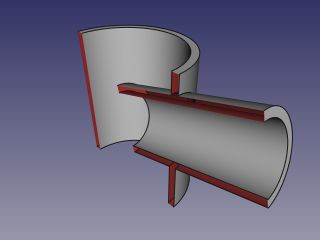

|
| Emplacement du menu |
|---|
| Part → Join → Embed Object |
| Ateliers |
| Part |
| Raccourci par défaut |
| Aucun |
| Voir aussi |
| Connect, Embed, Cutout, Part Booleans, Part Thickness |
Description
L'outil implante un objet valide dans un autre (par exemple tuyaux)

Comment l'utiliser
Sélection l'objet de base en premier, puis celui qui est implanté, l'ordre de sélection est important Choisir la commande Implantation
Un objet est créé, visible en vue 3D, les objet d'origine sont cachés
Propriétés
Base
- DONNÉESBase: Référence à l' objet de base . Cet objet doit être unique
- DONNÉESImplantable: Référence à l'objet a implanter. Cet objet peu être un objet simple ou un ensemble.
- DONNÉESMode: Le mode opératoire, égal 'joindre' (le changement doit être effectué dans Part_JoinXXX). La valeur du 'bypass' peu être temporairement dissous (un composé de Base et outil peu être créé, ça peut être une opération plus rapide ).
- DONNÉESRefine: Définit si l'opération Refine doit être appliquée ou non à la forme finale. La valeur par défaut est déterminée par une case à cocher "Affiner automatiquement la forme après l'opération booléenne" dans les préférences de PartDesign. Lorsque la propriété Mode est réglée sur "bypass", Refine est ignoré (jamais appliqué).
Example
- Créer un tuyau avec cylinder:

- Créer un autre plus petit, et le placer pour qu'il perce le premier tuyau:

- Sélectionner les deux tuyaux , et clic l'option 'Connexion d'objets' du menu déroulant Joindre Objets.


Utiliser divers outil de plan de coupe (Clipping plane, Arch Section Plane, Arch Cut Plane) pour voir l'intérieur. Dans l'image ci-dessous, Arch Section Plane est utilisé .

{kind=link}
Algorithm
1. L'objet de base est boolean-cut avec l’objet.
Le composé résultant le plus large est conservé
Le solide le plus large est l'objet outil boolean-fused
Si l'affinage de propriété est vraie, le résultat l'est refined.

Notes
- Si après l'étape 1, l' objet résulte en une pièce, l'implantation l'est
union La pièce la plus large est déterminante pour déterminer le volume final
Seul des solides sont concernés
Programmation
La commande  Move peut être utilisée dans une macro et dans la console Python, en utilisant la fonction suivante :
Move peut être utilisée dans une macro et dans la console Python, en utilisant la fonction suivante :
JoinFeatures.makePartJoinFeature(name = 'Embed', mode = 'Embed')
- Crée une fonction d'insertion vide (ou une autre fonction de jointure, selon le mode transmis). Les propriétés Base et Outil doivent être affectées explicitement, après.
- Renvoie l'objet nouvellement créé.
Exemple :
import JoinFeatures j = JoinFeatures.makePartJoinFeature(name = 'Embed', mode = 'Embed' ) j.Base = FreeCADGui.Selection.getSelection()[0] j.Tool = FreeCADGui.Selection.getSelection()[1]
L'outil lui-même est implémenté en Python, voir /Mod/Part/BOPTools/SplitFeatures.py la où FreeCAD est installé.
Version
Cet outil est inclus à FreeCAD depuis V0.16.5069